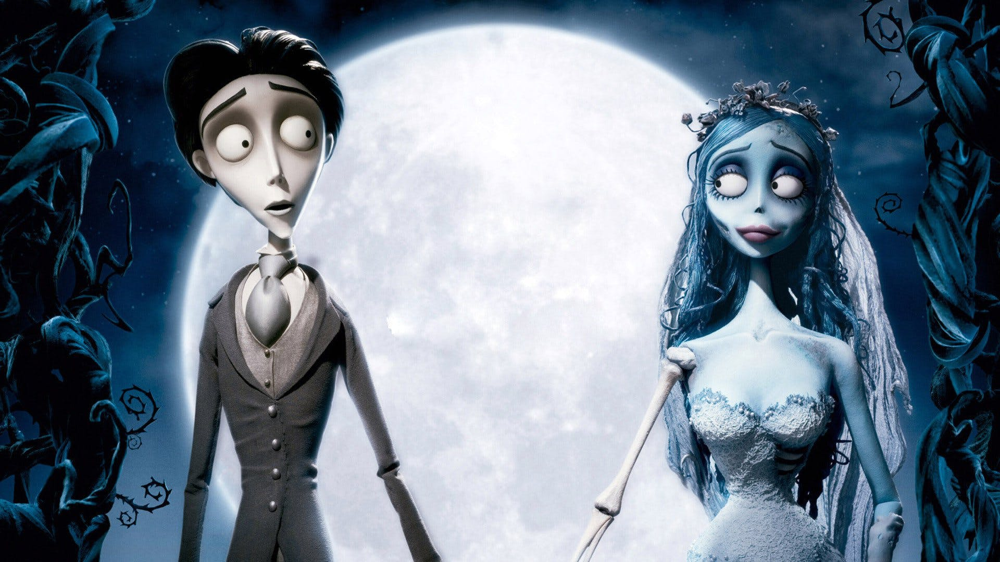
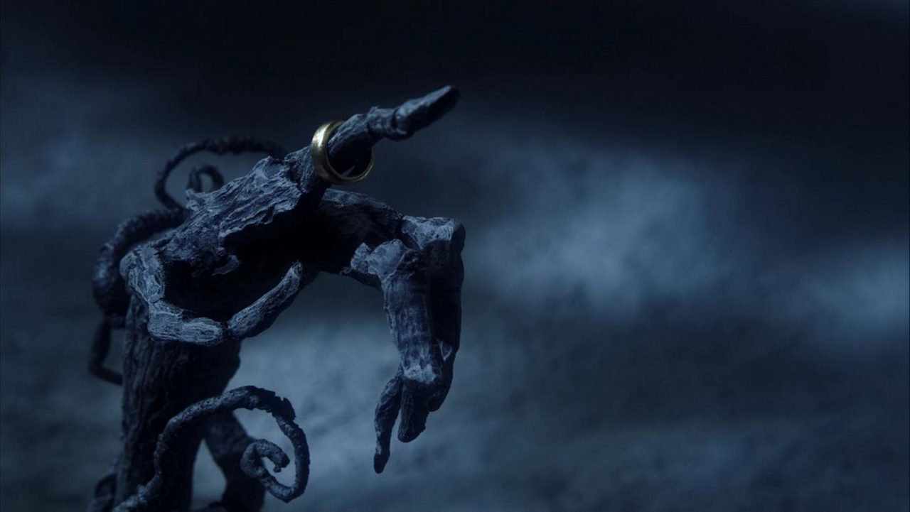
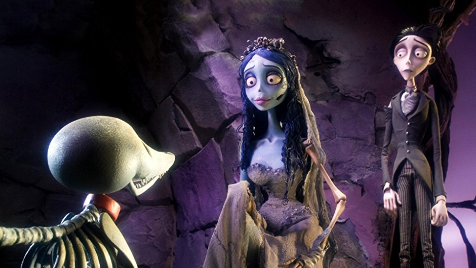

Corpse Bride
A Movie Review
by Alice • 6 years ago
In a village in Europe, there was a guy named Victor Van Dort who was born in a family selling fish. Victoria Everglot (Emily Watson), who is a gentle girl - is the daughter of a cruel nobleman.
Both are preparing to marry. The wedding is expected to elevate Victor's social status and restore the property of the Victorian family. Both of them initially worried about having to marry someone they did not know, but when they first met they fell in love. Victor, a shy and embarrassing man, accidentally ruined the wedding ceremony and was reproached by Pastor Galswells. He runs into the forest, he reads the wedding vow and wears the ring on a tree shaped hand. That's the finger of a dead girl in a wedding dress.She claimed to be Victor's wife. He was taken to the dead land.
Dead land is not scary, it's fun and there are good ghosts. Victor heard Emily tell the story of her life. Years ago she was killed by her lover, Her lover is a fraud, after he got her money, he killed her and ran away. Emily helps Victor reunite with his dead dog Scraps, as a wedding present. In order to return to reunion with Victoria, Victor tricked Emily to take him to the Land of the Living by pretending he wanted her to meet his parents. She agrees and takes him to see Elder Gutknecht the goodwill commander, to take him back to the Land of Lives.
Upon arriving home, Victor told Emily to wait in the woods and he rushed to meet Victoria and expressed his desire to marry her immediately, and Victoria responded.
As soon as they were about to kiss, Emily came in and saw the two of them. She felt betrayed and distressed, and she angrily dragged Victor back to Dead Land. Victoria tells her parents that Victor is forced to marry a dead girl. Victoria's parents thought daughter was crazy and locked her in the room.